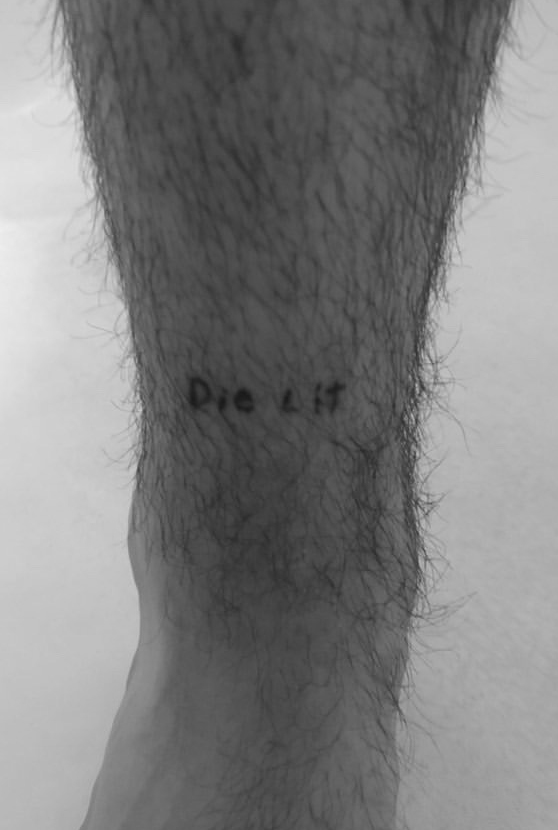

'Die Lit'
'Die Lit'
TATTOO TWO
Name - Emit White
Tattoo and placement - The words 'Die Lit' tattood on the front of the ankle.
How old are you? - 19 years old.
How old were you when you got this tattoo? - 18 years old.
How many tattoos do you have in total? - 2
How much did it cost you? - $0
Where did you get it done? - Stuyvesant park dorms.
How long did it take? - 1 hour.
How impulsive was it? - Considered for 3 hours, not a long time. I mentioned it in the morning and when I came home and I had gotten it. It was spring break, not that that’s a good excuse but I guess we were… bored.
Does this tattoo have a meaning behind it? - Humor somewhat, (not Playboy Carti).
Is it your own artwork? - Nope.
BACK BACK BACK BACK BACK BACK BACK BACK
